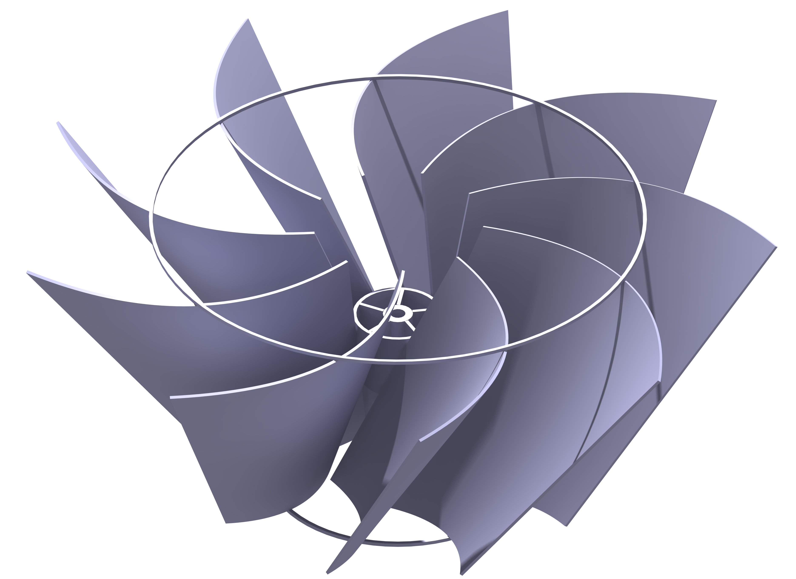

Gravitational Water Vortex Power Plant
Engineered mechanical components and runner designs for a novel low-head hydropower prototype using combined analytical and computational methods.



Project Overview
This project began as my undergraduate research on the design and performance improvement of a Gravitational Water Vortex Turbine (GWVT), a low-head hydropower technology. The initial research focused on developing a design reference for the turbine runner by investigating seven geometric parameters and evaluating their effects on system performance through numerical simulations and experimental testing.
The results demonstrated improvements in turbine efficiency through runner geometry optimization. Following the successful laboratory-scale study, the project attracted the interest of the Ministry of Energy, Government of Nepal. After graduation, I continued the work as a Research Assistant at the Center for Energy Studies.
The research was subsequently extended to a 1 kW pilot-scale hydropower plant to evaluate the technology under practical operating conditions and assess the challenges associated with scaling up the laboratory model. Over approximately four months of pilot testing, the study generated performance data that agreed well with the laboratory-scale results and demonstrated the potential for applying gravitational water vortex technology in real-world micro-hydropower systems.
Engineering Contributions
- Turbine Runner Design and Optimization: Designed multiple runner configurations by varying key geometric parameters. Conducted CFD simulations in ANSYS to evaluate flow behavior and predict performance, followed by fabrication and experimental testing of the runners.
- Pilot-Scale System Development: Designed the mechanical components of a 1 kW pilot-scale gravitational water vortex hydropower system, using analytical calculations and computational modeling to support component design.
- Prototype Fabrication and Testing: Coordinated prototype fabrication and assembly, and contributed to structural testing and operational performance evaluation.
- Experimental Validation: Compared pilot-scale performance with laboratory-scale findings to evaluate the feasibility of scaling up the technology and identify practical engineering challenges.
Tools and Technologies
CATIA | ANSYS Fluent | FEA | CFD | Prototype Development | Turbomachinery
Publications
Effects of Geometrical Parameters in Gravitational Water Vortex Turbines with Conical Basin
Development of a 1 kW Gravitational Water Vortex Hydropower Plant Prototype